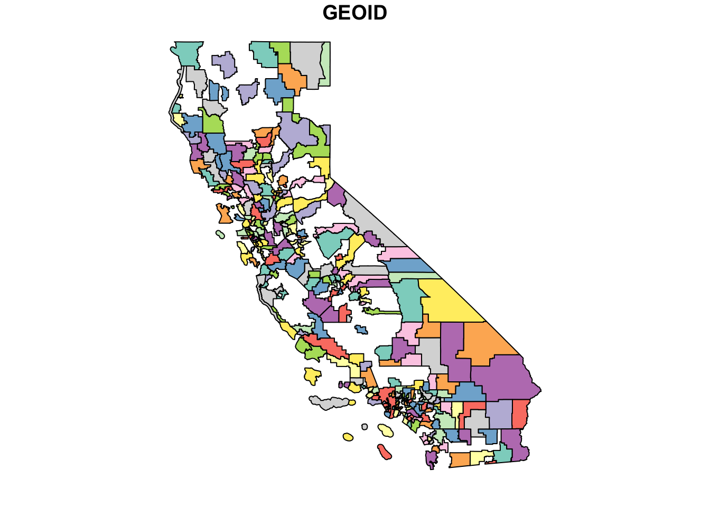
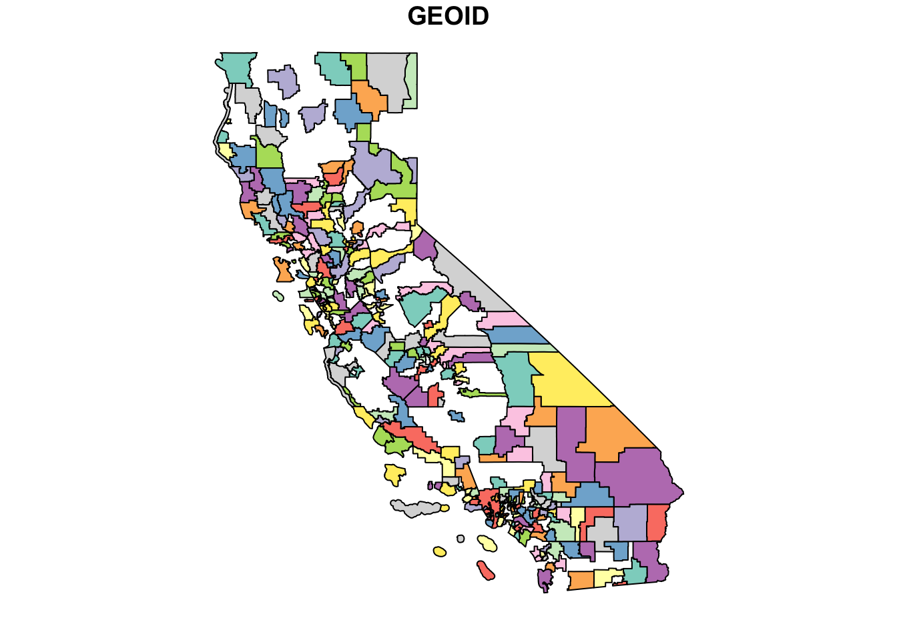
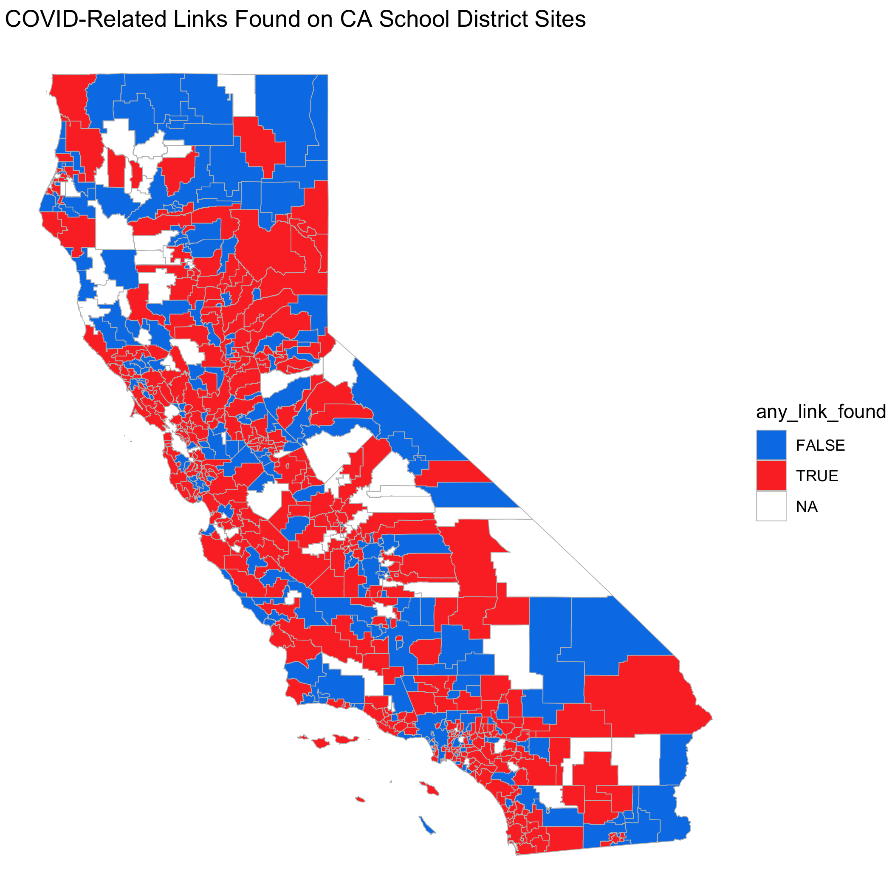

library(tigris)
ca <- tigris::school_districts(state = "06",
type = "unified")
plot(ca["GEOID"])
The {leaidr} package helps us easily create maps of U.S. school districts.
May 3, 2020
I would like to introduce {leaidr}, a package for mapping U.S. school district shapefiles!
Inspired by my coauthor Joshua Rosenberg, the goal of {leaidr} is to facilitate the download and use of school district shapefiles.
School districts in the U.S. have associated local education agency identification numbers (LEAID) used in the National Center for Education Statistics (NCES) Common Core of Data. These are very useful because if you have other datasets with NCES IDs, then you can (sometimes easily) join them.
It can be very useful to visualize districts and associated data. District shapefiles are available in different places, such as through the NCES and Stanford Education Data Archive. The package {tigris} also has a school district option, but unfortunately, it is missing a few district polygons.

{leaidr} downloads NCES’ U.S. district shapefile from Github using ROpenSci’s {piggyback} package. This is a super helpful package, as Github caps file uploads at 100 MB (and the shapefile is ~170 MB). I originally tried Github Large File Storage (LFS), but it stores files as a hash, not as an actual file. Therefore, I couldn’t figure out how to use it for a package that others can use.
The function lea_get() downloads an R Data file from the Github repo to your designated path and then writes the necessary shapefiles. Then, create an object with lea_prep() by designating where the shapefiles exist and which state(s) you would like. Note: For now, you must use the state’s FIPS code. FIPS state codes are numeric and two-letter alphabetic codes to identify U.S. states and certain other associated areas. A reference table is found here.
Once you have the shapefile, then you can merge with other datasets and plot using packages like {leaflet} and {ggplot2}.
Let’s walk through an example where we will merge external data to the shapefile and then map all the districts in California. The external data is from Josh’s covidedu project, which scrapes district websites for specific words. In this case, the search terms were “covid*”, “coron*”, and “closure”. I highly recommend using covidedu for easy scraping from a lot of district websites!
First, let’s call our packages.
Time to get your data! Use {leaidr} to download and prep your shapefiles for California (FIPS == 06). Read in the external data (in this case, summary-of-table-of-links.csv).
You must have a GitHub PAT set to run lea_get(). Happy git with R has a great walkthrough on how to get one if you do not have it already.
# download the shapefile into a designated folder
leaidr::lea_get(path = "./test")
# prep the shapefile for the state(s) you'd like
ca_shapefile <-
leaidr::lea_prep(path = "./test", fips = "06")
# read in the external data that also has NCES ID's
# this is from the covidedu project
ca_data <-
read_csv("https://raw.githubusercontent.com/making-data-science-count/covidedu/master/output/2020-04-29/summary-of-table-of-links.csv")Join the CSV to the shapefile.
Now ‘fortify’ the data - this converts the polygons into points. This is so that ggplot can create the plot.
If you get the error isTRUE(gpclibPermitStatus()) is not TRUE, then you need to enable gpclib by running gpclibPermit() (this is part of the {maptools} package, which should have been loaded above). Note that support for gpclib will be withdrawn from maptools at the next major release, so you might have to try something else if the package has been upgraded.
If you run gpclibPermit() and you keep getting FALSE, then you are missing the package {gpclib}. Install the package, then run gpclibPermit() to set it to TRUE.
(I don’t know if this is the best/only way to do this - if anybody has suggestions, please let me know!)
Now, join the points and the shapefile data.
We can finally plot the shapefile and its data!
To make a nicer looking map, then you can use coord_map().

Tada! A full school district map for California.
Please try out {leaidr}! I hope that it is useful to you in your work. I’d love any collaborators to join me in making it easier/better!
Ever wish you could easily create U.S. school district maps 🗺🏫 in #rstats? Check out {leaidr}, which downloads the shapefile from GitHub using @rOpenSci 's {piggyback} 🐷! Would love any thoughts on how to improve! Repo: https://t.co/yOszd4agYM Tutorial: https://t.co/JuqGQcVR7Z
— Isabella Velásquez (@ivelasq3) May 11, 2020